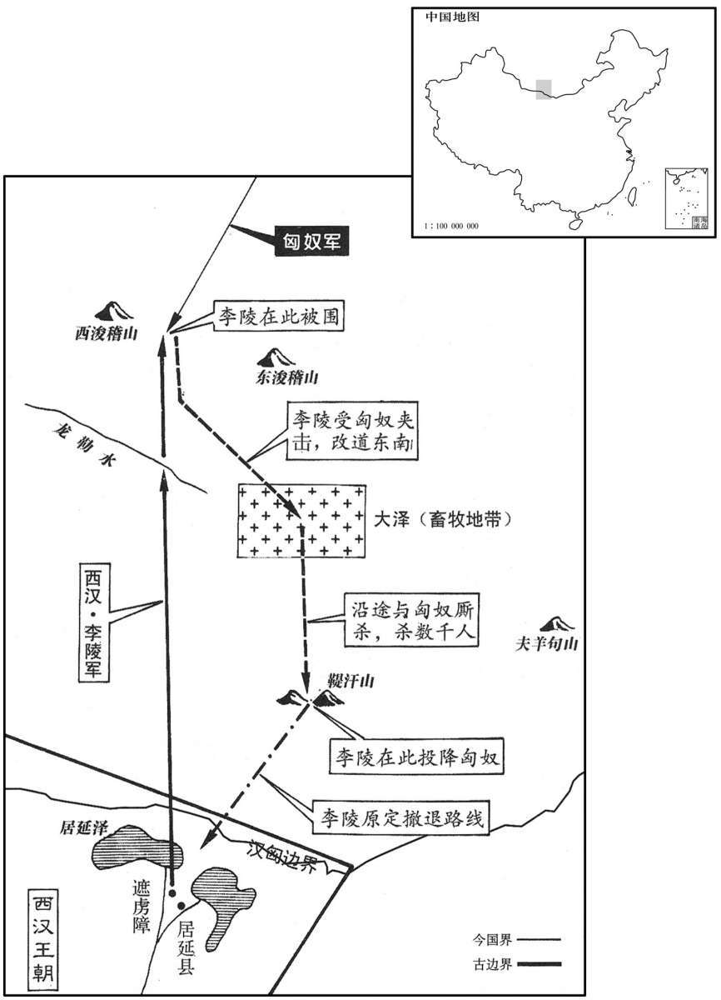

公元前99年资治通鉴：本年记事、原文与白话对照
按原书编年位置阅读；追叙和史论不等于本年发生的事件。白话采用所据译本，缺译不以生成译文补齐。
卷21 · 本年记事
公元前99年 · 汉世宗孝武皇帝天汉二年
天汉二年〔（壬午、前九九）〕
本年事件索引（现代整理）

本年形势与背景参考图
春，上行幸东海。〔东海郡属徐州；唐为海州地。〕□幸回中。〔【章：十四行本空格作“还”字；乙十一行本同；孔本同；退斋校同。】〕
春季，汉武帝巡游东海郡。在回京途中巡游回中。
夏，五月，遣贰师将军广利以三万骑出酒泉，击右贤王于天山，〔晋灼曰：天山在西域，近蒲类国，去长安八千里。师古曰：即祈连山也。匈奴谓天曰“祈连”。西河旧事：白山冬夏有雪，匈奴谓之天山。括地志：天山，一名白山，今名折罗漫山，在伊吾县北百二十里。伊州在长安西北四千四百一十六里。余据唐志，祁连山在甘州张掖县，与天山似是两处。骑，音渠吏翻。〕得胡首虏万余级而还。〔还，从宣翻，又如字。〕匈奴大围贰师将军，汉军乏食数日，死伤者多。假司马陇西赵充国〔陇西郡属凉州；唐河、渭、岷州地。〕与壮士百余人溃围陷陈，〔陈，读曰阵。〕贰师引兵随之，遂得解。汉兵物故什六七，充国身被二十余创。贰师奏状，诏征充国诣行在所，帝亲见，视其创，〔被，皮义翻。创，初良翻。〕嗟叹之，拜为中郎。
夏季，五月，汉武帝派贰师将军李广利率三万骑兵从酒泉出塞，在天崐山一带袭击匈奴右贤王，共擒斩匈奴一万余人后返回。途中被匈奴重兵包围。汉军一连几天缺乏粮食，伤亡惨重。代理司马的陇西人赵充国率精壮兵卒一百余人冲破匈奴的包围，李广利率大军紧跟其后，才得以解脱困境。这次战役，汉兵阵亡了十分之六七，赵充国受伤二十余处。李广利上奏朝廷，汉武帝将赵充国召到驻所，亲自接见，察看了他的的伤势，叹息不已，封赵充国为中郎。
汉复使因杅将军敖出西河，〔西河郡属并州。〕强〔【章：十四行本“强”上有“与”字；乙十一行本同；张校同；退斋校同。】〕弩都尉路博德会涿涂山，〔徐广曰：涂，音邪。索隐曰：涿，音卓。邪，以奢翻。汉书作“涿邪山”，在高阙塞北千里。〕无所得。
汉武帝又派因杆将军公孙敖率兵从西河郡出塞，与强弩都尉路博德会师于涿涂山，但毫无收获。
初，李广有孙陵，为侍中，善骑射，爱人下士。帝以为有广之风，拜骑都尉，〔续汉志：骑都尉比二千石。杜佑曰：奉车都尉、驸马都尉、骑都尉并汉武帝置；东晋省奉车、骑都尉，惟留驸马，尚主者为之。〕使将丹阳、楚人五千人，〔丹阳，秦鄣郡地，元封二年更名丹阳，属扬州；唐宣、歙、池、升、睦州之地。〕教射酒泉、张掖以备胡。及贰师击匈奴，上诏陵，欲使为贰师将辎重。〔将，即亮翻；下同。重，直用翻。〕陵叩头自请曰：“臣所将屯边者，皆荆楚勇士奇材剑客也，力扼虎，〔扼，捉持也。〕射命中，〔师古曰：所指名处即中之也。中，竹仲翻。〕愿得自当一队，到兰于〔【章：十四行本“于”作“干”；乙十一行本同；退斋校同。】〕山南以分单于兵。”毋令专乡贰师军。”〔乡，读曰向。〕上曰：“将恶相属邪！〔将，如字。恶，乌路翻。〕吾发军多，无骑予女。”陵对：“无所事骑，〔师古曰：犹言不须骑也。予，读曰与。女，读曰汝。〕臣愿以少击众，步兵五千人涉单于庭。”上壮而许之，因诏路博德将兵半道迎陵军。博德亦羞为陵后距，奏言：“方秋，匈奴马肥，未可与战，愿留陵至春俱出。”上怒，疑陵悔不欲出而教博德上书，乃诏博德引兵击匈奴于西河。诏陵以九月发，出遮虏障，〔遮虏障在张掖居延县，路博德所筑。括地志：汉居延故城，在甘州张掖县之东北一千五百三十里，有遮虏障。〕至东浚稽山南龙勒水上，〔班志，敦煌龙勒县有龙勒水，出南羌中，东北入泽，溉民田，盖其下流北至浚稽山下。〕徘徊观虏，即无所见，还，抵受降城休士。〔太初元年，公孙敖筑受降城。〕陵于是将其步卒五千人，出居延，北行三十日，至浚稽山止营，举图所过山川地形，使麾下骑陈步乐还以闻。步乐召见，道陵将率得士死力，〔将率，犹言将领也。将，即亮翻。率，如字。〕上甚悦，拜步乐为郎。
当初，李广的孙子李陵担任侍中，精通骑马射箭之术，爱护士卒，谦恭地对待贤士。汉武帝认为李陵颇有其祖父李广的风范，封他为骑都尉，命他带领丹阳和楚地人五千，在酒泉、张掖一带教习射箭之术，以防备匈奴。李广利出击匈奴时，汉武帝召见李陵，想命他为李广利押运辎重。李陵叩头请求说：“我所率领屯戍边塞的人，都是荆楚地区勇武之士和奇才剑客，论力量能够手扼猛虎，论箭术堪称百发百中，希望能让我自己率领一队人马，前往兰于山以南地区，用以分散匈奴单于的兵力，使其不能全力对抗贰师将军的部队。”汉武帝说：“你不愿作别人的部下吗！这次我调动的军队太多，没有马匹分配给你。”李陵说：“我用不着马匹，愿以少敌众，率五千步兵直捣匈奴单于的王庭。”汉武帝赞赏李陵的豪情壮志，同意了他的请求，下诏命路博德在半途中接应李陵。路博德也羞于做李陵的后援部队，便上奏说：“如今正值秋季，匈奴马肥，不宜于此时与匈奴交战，希望陛下命李陵稍等，到明年春天再一同出征。”汉武帝很生气，怀疑是李陵胆怯后悔，不想出征，而让路博德上书，便下诏命路博德率兵赴西河袭击匈奴，同时命李陵于九月自居延遮虏障出发，深入东浚稽山南面的龙勒水边巡回观察匈奴动静，如果不见敌踪，便退回受降城休息士卒。于是，李陵率领步兵五千人，出居延向北推进，三十天后抵达浚稽山，停下扎营，沿途命人将所过之处的山川地形绘制成图，派部下骑兵陈步乐送回长安。汉武帝召见陈步乐，听他报告说李陵能使部下拚死效力，非常高兴，封陈步乐为郎官。
陵至浚稽山，与单于相值，骑可三万围陵军，军居两山间，以大车为营。陵引士出营外为陈，〔陈，读曰阵。〕前行持戟、盾，后行持弓、弩。〔行，户刚翻。盾，食尹翻。〕虏见汉军少，直前就营。陵搏战攻之，〔如淳曰：手对战也。〕千弩俱发，应弦而倒，虏还走上山，〔上，时掌翻。〕汉军追击杀数千人。单于大惊，召左、右地兵八万余骑攻陵。陵且战且引南行，数日，抵山谷中，〔师古曰：抵，当也，至也。〕连战，士卒中矢伤，三创者载辇，两创者将车，一创者持兵战，复斩首三千余级。〔中，竹仲翻。创，初良翻。将，如字，诗，无将大车，郑氏曰：将，犹扶进也。复，扶又翻。〕引兵东南，循故龙城道行，四五日，抵大泽葭苇中，〔师古曰：葭，即芦也。释名曰：初生为葭，长大为芦，成则名为苇。〕虏从上风纵火，陵亦令军中纵火以自救。〔师古曰：预烧自陈前葭苇，则虏火不得而延及也。〕南行至山下，单于在南山上，使其子将骑击陵。陵军步鬬树木间，复杀数千人，因发连弩射单于，〔服虔曰：三十弩共一弦也。张晏曰：三十絭共一臂也。贡父曰：皆无此理。盖如今之合蝉，或并两弩共一弦之类。余据魏氏春秋，诸葛亮损益连弩，以铁为矢，矢长八寸，一弩十矢俱发。今之划车弩、梯弩盖亦损益连弩而为之，虽不能三十臂共一弦，亦十数臂共一弦。射，而亦翻。〕单于下走。是日捕得虏，言“单于曰：『此汉精兵，击之不能下，日夜引吾南近塞，得无有伏兵乎？』〔近，其靳翻。〕诸当户君长皆言：〔师古曰：当户，匈奴官名。余据匈奴之官有左右当户、骨都侯，凡二十四长。〕『单于自将数万骑击汉数千人不能灭，后无以复使边臣，〔复，扶又翻；下同。〕令汉益轻匈奴。复力战山谷间，尚四五十里，得平地，不能破，乃还。』”
李陵在浚稽山与单于率领的匈奴军队相遇，匈奴约三万骑兵将李陵的部队包围。李陵屯兵两山之间，用大车围成营寨，亲自率领士卒在营外列下战阵，前排手持戟、盾，后排手持弓、弩。匈奴兵见汉军人少，便直逼营前阵地。李陵率部迎击，展开搏斗，汉军千弩齐发，匈奴兵纷纷应弦倒地，只得退回山上，汉军追击，杀死匈奴数千人。单于大惊，召左、右两翼军八万余骑兵崐前来围攻李陵。李陵率部且战且走，向南撤退，数日后，来到一个山谷之中。汉军接连作战，士卒大多身带箭伤，仍顽强苦战，受伤三处的坐在车上，受伤两处的驾车，受伤一处的手持武器坚持战斗，又斩杀匈奴三千余人。李陵率部沿着龙城旧道向东南方撤退，四五日后，退到一大片沼泽芦苇之中。匈奴在上风放火，企图烧死汉军；李陵也命部下放火烧光周围的芦苇以自救。汉军继续南行，来到一座山下。单于在南山上命他的儿子率领骑兵向汉军进攻。汉军在树林之中步战，又杀死匈奴数千人，并用连弩机射单于，单于下山逃避。这一天，汉军抓到部分匈奴俘虏，据他们说：“我们听单于说：‘这是汉朝的精兵，猛攻也没能将他们消灭，他们日夜引我们向南接近汉塞，莫非是有埋伏的军队吗？’各位当户、君长都说：‘单于亲率数万骑兵攻击汉军数千人而不能将他们消灭，以后将无法再号令边臣，还会使汉朝更加轻视匈奴。所以要在山谷中再次力战，还有四五十里才到平原地区，如仍不能取胜就返回。’”
是时陵军益急，匈奴骑多，战一日数十合，复伤杀虏二千余人。虏不利，欲去，会陵军候管敢为校尉所辱，〔续汉志：凡领军皆有部曲；部有校尉，部下有曲，曲有军候一人。〕亡降匈奴，具言：“陵军无后救，射矢且尽，独将军麾下及校尉成安侯韩延年〔韩延年以父千秋死南越封，事见上卷元鼎五年。〕各八百人为前行，以黄与白为帜；当使精骑射之〔行，户刚翻。射，而亦翻。〕即破矣。”单于得敢大喜，使骑并攻汉军，疾呼曰：“李陵、韩延年趣降！”〔呼，火故翻。趣，读曰促。〕遂遮道急攻陵。陵居谷中，虏在山上，四面射，矢如雨下。汉军南行，未至鞮汗山，一日五十万矢皆尽，〔师古曰：鞮，音丁奚翻。汉书作“百五十万矢皆尽”。〕即弃车去。士尚三千余人，徒斩车辐而持之，〔师古曰：徒，但也。辐，音福。〕军吏持尺刀〔【章：十四行本“刀”下有“抵山”二字；乙十一行本同；孔本同；张校同。】〕入狭谷，单于遮其后，乘隅下垒石，〔服虔曰：垒石，山名也。师古曰：此说非也，言放石以投人，因山隅曲而下也。垒，卢对翻。〕士卒多死，不得行。昏后，陵便衣独步出营，〔苏林曰：褰衣卷袖而行也。师古曰：便衣，谓着短衣小袖也。〕止左右：“毋随我，丈夫一取单于耳！”〔师古曰：言一身独取也。〕良久，陵还，太息曰：“兵败，死矣！”于是尽斩旌旗，及珍宝埋地中，陵叹曰：“复得数十矢，足以脱矣。今无兵复战，〔师古曰：兵即谓矢及矛戟之属也。〕天明，坐受缚矣，各鸟兽散，犹有得脱归报天子者。”令军士人持二升糒，一片冰，〔师古曰：时冬寒有冰，持之以备渴也。糒，音备。〕期至遮虏障者相待。〔与军士期，有先至遮虏障者留驻以待后至也。〕夜半时，击鼓吉士，鼓不鸣。陵与韩延年俱上马，壮士从者十余人，虏骑数千追之，韩延年战死。陵曰：“无面目报陛下！”遂降。军人分散，脱至塞者四百余人。
此时汉军处境越发凶险。匈奴骑兵多，一日交战数十回合，汉军又杀伤匈奴二千余人。匈奴作战不利，打算撤兵离去。然而就在此时，李陵军中有一个名叫管敢的军候，因受到校尉的欺辱，逃到匈奴军中投降，一一说出汉军实情：“李陵部队并无后援，箭矢也即将用尽，只有将军部下和校尉成安侯韩延年所属部队各八百人在前面开路，以黄旗和白旗作为标志。应当派精锐骑兵用弓箭射杀他们，汉军立即就可击破。”单于得到管敢，喜出望外，命匈奴骑兵一齐向汉军发起进攻，同时令人大声喊叫：“李陵、韩延年快快投降！”又派兵截断汉军的道路，猛攻李陵。李陵的部队被困在山谷之中，匈奴军在山上，从四面射箭，箭如雨下。李陵继续向南退却，尚未到达汗山，一天中五十万支箭已全部用尽，于是放弃辎重车辆，继续前往。此时军中士兵还有三千余人，只能砍下车的辐条拿在手中做武器，文职人员也手持短刀加入战斗行列。汉军退入狭谷之中，单于亲自率兵截断汉军后路，指挥匈奴兵卒将山上巨石滚入谷中，汉军多数死去，不能前进。黄昏以后，李陵独自一人身穿便衣走出大营，止住左右随从说：“不要跟着我，我要独自一人生擒单于！”过了很长一段时间，李陵回到营中，叹道：“我们已然兵败，即将死于此地了！”于是将所有的旌旗尽行砍倒，与珍宝一起埋入地下，李陵叹了口气，对部下说道：“如果再有数十支箭，我们就足以逃脱了。现在已没有武器再战，天亮以后，就只能坐等被擒了，不如各自逃命，还有人能够侥幸逃脱回去报告天子。”于是命将士每人身带二升干粮，一片冰，约定到遮虏障会合。半夜时，李陵命人击鼓叫醒将士们，但战鼓已破，敲不响。李陵与韩延年都跨上战马，十几名壮士跟随。匈奴数千名骑兵随后追击，韩延年战死。李陵说道：“我已无面目报答皇帝陛下了！”于是投降。其他人分散突围，逃回边塞的有四百余人。
陵败处去塞百余里，〔史记正义曰：遮虏障北百八十里直居延西北，长老相传，云是李陵战处。〕边塞以闻。上欲陵死战；后闻陵降，上怒甚，责问陈步乐，步乐自杀。群臣皆罪陵，上以问太史令司马迁，迁盛言：“陵事亲孝，与士信，常奋不顾身以徇国家之急，〔师古曰：徇，营也；一曰：从也。〕其素所畜积也，〔言其胸中素所畜积者如上所言也。〕有国士之风。今举事一不幸，全躯保妻子之臣随而媒蘖其短，〔服虔曰：媒，音欺，谓诋欺也。孟康曰：媒，酒教；蘖，曲也；谓酿成其罪也。师古曰：孟说是也。齐人名曲饼曰媒。贾公彦曰：齐人名曲饼为媒者，曲麸和合得成酒醴，名之为媒。〕诚可痛也！且陵提步卒不满五千，深蹂戎马之地，〔师古曰：蹂，人九翻，践也。〕抑数万之师，虏救死扶伤不暇，悉举引弓之民共攻围之，转斗千里，矢尽道穷，士张空弮，〔文颖曰：弮，弓弩弮也。师古曰：音去权翻，又音眷。〕冒白刃，北首争死敌，〔师古曰：冒，犯也。北首，北向也。冒，音莫北翻。首，音式救翻。〕得人之死力，虽古名将不过也。身虽陷败，然其所摧败亦足暴于天下。〔师古曰：所摧败，败匈奴之兵也。暴者，犹章也。摧败，补卖翻。〕彼之不死，直欲得当以报汉也。”〔师古曰：言欲立功以当罪也。〕上以迁为诬罔，欲沮贰师，为陵游说，下迁腐刑。〔沮，在吕翻。为，于伪翻。说，式芮翻。下，遐嫁翻。如淳曰：腐，宫刑也。丈夫割势不复能生子，如腐木不生实。腐，音附。〕
李陵兵败之处距边塞只有一百余里，边塞将领将此事报告朝廷。汉武帝本希望李陵能死战，后听说李陵投降匈奴，十分愤怒，责问陈步乐，陈步乐自杀而死。满朝大臣都说李陵有罪，汉武帝问太史令司马迁对此事的看法，司马迁竭力为李陵分辩说：“李陵对父母孝顺，对士人讲信义，常常奋不顾身，赴国家急难，这正是他平时的志愿所在，颇有国士的风范。如今出征偶然不幸失败，那些保全自身性命和妻子儿女的臣子就跟着捏造他的短处，实在令人痛心！况且李陵率领不到五千步兵，深入满是战马的匈奴腹地，抵挡数万敌军；匈奴被打得连救死扶伤都顾不过来，将全国所有能拉弓射箭的人全部调来围攻李陵。李陵率部转战千里，箭矢用尽，无路可走，将士们手拿着没有箭的空弩机，冒着敌人锋利的枪尖刀刃，仍然面向北方拚死力战，能够得到部下这样的拚死效力，既使是古代的名将，也不过如此！李陵虽然兵败，但他对匈奴的打击也足以使他名扬天下了。李陵之所以没有死节，当是想找机会报效国家。”汉武帝认为司马迁在诬陷欺骗，是为了诋毁李广利，为李陵游说开脱，下令对司马迁施以宫刑。
久之，上悔陵无救，曰：“陵当发出塞，乃诏强弩都尉令迎军；坐预诏之，得令老将生奸诈。”〔孟康曰：坐预诏博德迎陵，博德老将，出塞不至，令陵见没也。余谓此说非也。帝意既悔，追思前事，以为当陵发出塞之时，方可诏博德继其后以迎陵军，乃于陵未行之时预诏之，使博德羞为陵后距，得生奸诈上奏，而遂令博德别出西河，使陵军无救也。〕乃遣使劳赐陵余军得脱者。〔劳，力到翻。〕
很久以后，汉武帝才对原先使李陵陷入孤立无援的境地表示后悔，说道：“应当在李陵率军出塞时，再让强弩将军路博德前去接应；而我预先就颁下诏书，使老将路博德生出奸诈之心，不肯接应李陵。”于是派使臣对逃脱回来的李陵余部进行慰劳赏赐。
上以法制御下，好尊用酷吏，〔好，呼报翻。〕而郡、国二千石为治者大抵多酷暴，〔治，直之翻。〕吏民益轻犯法；东方盗贼滋起，大群至数千人，攻城邑，取库兵，〔汉郡、国各有库兵。〕释死罪，缚辱郡太守、都尉，杀二千石，小群以百数掠卤乡里者，不可胜数，〔胜，音升。〕道路不通。上始使御史中丞、丞相长史督之，弗能禁；〔督，察也。禁，居禽翻。〕乃使光禄大夫范昆及故九卿张德等衣绣衣，持节，虎符，发兵以兴击。〔师古曰：以军兴之法而讨击也。衣绣，于既翻。〕斩首大郡或至万余级，及以法诛通行、饮食当连坐者，诸郡甚者数千人。数岁，乃颇得其渠率，〔师古曰：渠，大也。率，所类翻。〕散卒失亡复聚党阻山川者往往而群居，无可柰何。于是作沈命法，〔应劭曰：沈，没也。敢蔽匿盗贼者没其命也。孟康曰：沈，藏匿也。命，亡逃也。师古曰：应说是。沈，持林翻。〕曰：“群盗起，不发觉，发觉而捕弗满品者，〔师古曰：品，率也，以人数为率也。〕二千石以下至小吏，主者皆死。”其后小吏畏诛，虽有盗不敢发，恐不能得，坐课累府，府亦使其不言。〔师古曰：县有盗贼，府亦并坐，故使县不言之也。累，力瑞翻。〕故盗贼寖多，上下相为匿，以文辞避法焉。
汉武帝用法制来控制国家，喜欢任用执法严苛的官吏，各郡、国的二 千石官也大多以残暴的手段治理地方，而小吏和平民百姓对犯法却越发不当回事。东部地区盗贼兴起，大股数千人，攻打城邑，夺取府库的兵器，释放犯死罪的囚徒，捆缚、污辱郡太守、都尉，杀死二千石官；小股数百人，在乡村中劫杀抢掠，多得无法计算，致使道路断绝。汉武帝开始只派御史中丞、丞相长史负责督察镇压，但未能禁绝；于是派光禄大夫范昆及曾经位居九卿的张德等身穿绣花官服，手持皇帝符节和调兵的虎符，调集军队进行围剿，有的大郡斩杀达一万余人；另外，各郡因帮助盗贼通行、提供食物而受到牵连、犯法被杀的普通百姓多的也达数千人。过了几年，抓获了大部分盗贼首领。一些被打散逃亡的人，往往重新聚集在一起，占据山川险要之处，官府无可奈何。于是，汉武帝命人制定《沉命法》，规定：“凡有成帮结伙盗贼兴起，地方官不能及时发现，或虽然发现却未能全部擒获，自二千石官以下直至小吏，主持其事的一律处死；”从此以后，小吏畏惧朝廷治罪，既使发现有盗贼，也因害怕不能全部捕获而不敢报告；各郡长官因害怕受到牵连，也让下属不要报告。因此，盗贼越来越多，而地方官上下串通，隐瞒不报，空以虚文应付朝廷，逃避法网。
是时，暴胜之为直指使者，所诛杀二千石以下尤多，威震州郡。〔暴，周卿士暴公之后。〕至勃海，〔勃海郡属幽州，高祖置。师古曰：在勃海之滨，因以为名；唐为沧、景州之地。〕闻郡人隽不疑贤，〔师古曰：隽，音徂兖翻，又辞兖翻，姓谱有隽姓。〕请与相见。不疑容貌尊严，衣冠甚伟，胜之躧履起迎，〔文颖曰：躧，音纚。师古曰：履不着跟曰躧。躧，谓纳履未正，曳之而行。躧，音山尔翻。〕登堂坐定，不疑据地曰：“窃伏海濒，闻暴公子旧矣，〔师古曰：濒，厓也。公子，胜之字也。旧，久也。〕今乃承颜接辞。凡为吏，太刚则折，〔折，而设翻。〕太柔则废，威行，施之以恩，然后树功扬名，〔树，立也。〕永终天禄。”胜之深纳其戒；及还，表荐不疑，上召拜不疑为青州刺吏。济南王贺亦为绣衣御史，〔济，子礼翻。〕逐捕魏郡群盗，〔魏郡，高帝置，属冀州，唐为相、魏、澶、卫州地。〕多所纵舍，以奉使不称免，〔师古曰：不称，谓不副所委。称，尺正翻。〕叹曰：“吾闻活千人，子孙有封，吾所活者万余人，后世其兴乎！”〔为王氏子孙以外戚篡汉张本。〕
此时，暴胜之担任直指使者，经他之手处死的二千石以下官员尤其众多，因此威镇各州郡。暴胜之来到渤海郡，听说当地人隽不疑贤明练达，便请来相见。隽不疑容貌庄重严肃，衣冠十分华丽整齐，暴胜之听说隽不疑到来，连鞋崐都没顾上穿好就急忙起来相迎，让进客厅坐定，隽不疑以手按地，欠身说道：“我虽生活在偏僻的海滨，但也久闻暴公子的大名，想不到今天有幸蒙公子接见指教。我认为，作为一名官吏，过于刚强容易折断，过于柔弱则法令难行，应既展示威严，又施以恩惠，才能建立功业，立身扬名，永远保持上天所赐的福禄。”暴胜之对他的告诫深为赞同，回到京城后，上奏推荐隽不疑。汉武帝召隽不疑前来，任命为青州刺史。济南人王贺也曾担任绣花御史，负责驱捕魏郡的盗贼，他放过了很多人，因此被以不称职的罪名罢免。王贺叹道：“我听说，救活一千人，子孙就可得到封爵，我救活的人有一万多，后代会有人兴起吧！”
是岁，以匈奴降者介和王成娩为开陵侯，〔降，户江翻。师古曰：娩，音晚，又音免。班志，开陵，侯国，属临淮郡。〕将楼兰国兵击车师；匈奴遣右贤王将数万骑救之，汉兵不利，引去。
这一年，汉武帝封归降汉朝的匈奴介和成娩为开陵侯，命其率领楼兰国军队袭击车师国。匈奴派右贤王率数万骑兵前往援救，汉军作战失利，退兵而去。